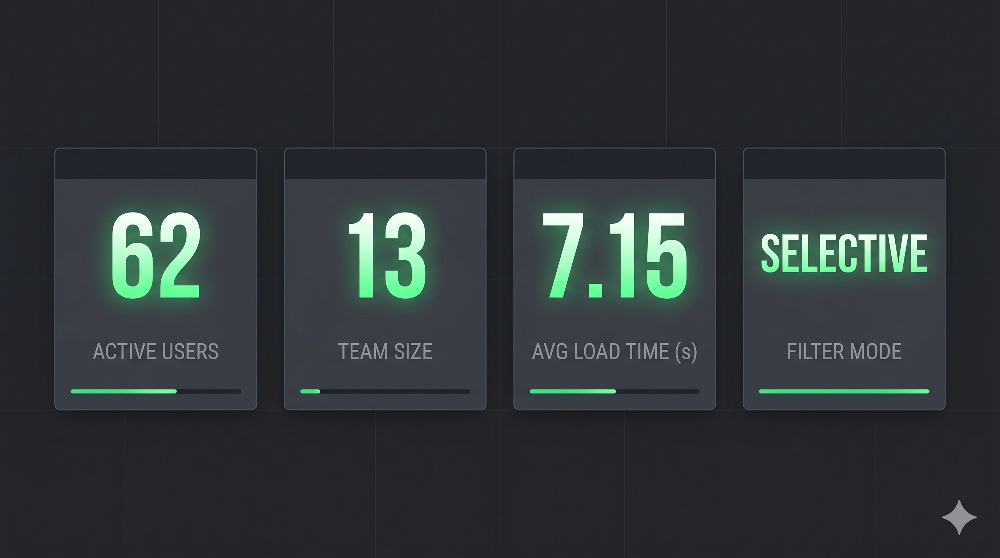
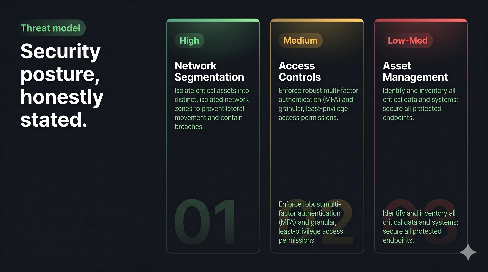
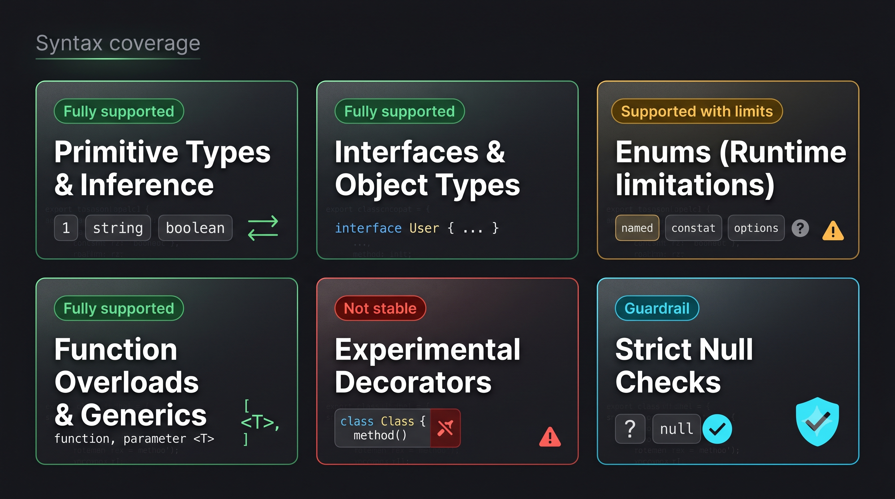
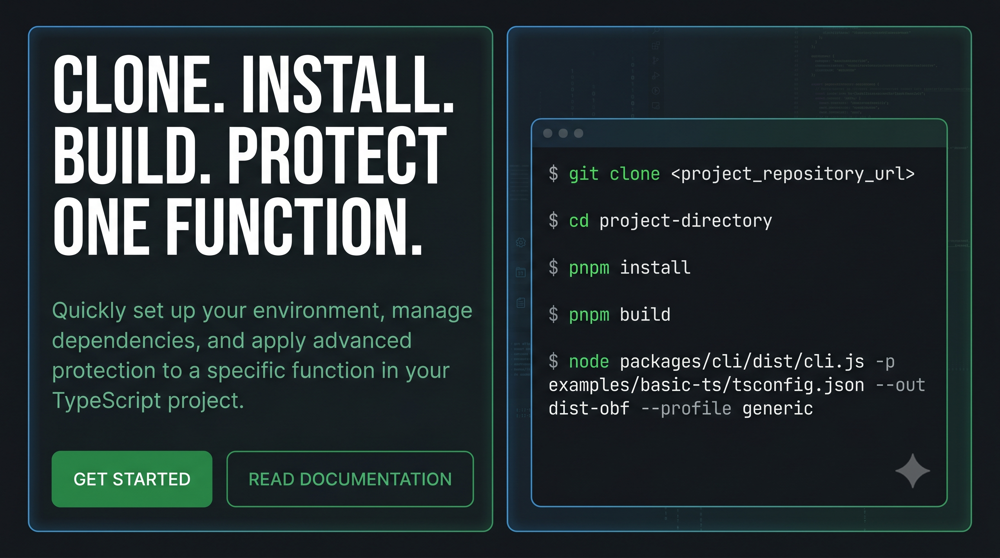

TS project analysis
Resolves imports, exports, scope rules, and typed symbols through the official TS Compiler API.
TSXobf compiles selected TypeScript functions into a polymorphic VM.
The rest of your app stays native.
/** @virtualize */ export function calculateSecretHash(input: string): number { let hash = 0; for (let i = 0; i < input.length; i++) { hash = (hash << 5) - hash + input.charCodeAt(i); hash |= 0; } return hash; }
Traditional obfuscators rename variables and inject dead code. TSXobf is a full compiler pipeline: source → semantic IR → encrypted bytecode → generated VM runtime.

Resolves imports, exports, scope rules, and typed symbols through the official TS Compiler API.
Selected functions lower into a typed intermediate representation with explicit control flow.
String pool encoding, symbol indirection, dead code injection, fake paths, generic confusion, namespace virtualization.
IR compiles into encrypted, remapped, build-specific opcode streams with 1-to-N aliasing.
Polymorphic dispatch handlers, encrypted constant pool, optional rolling self-modifying bytecode.
CLI writes a zero-dependency JS file to dist-obf/ — Node, browser, Electron, Workers.

Full TS Compiler API integration — understands types, imports, class hierarchies, and scopes.
One instruction maps to many virtual opcodes, randomized per build. Defeats statistical pattern matching.
Per-execution bytecode cloning with LCG-derived corruption masks and Shadow XOR Mask Buffer recovery.
Trap-backed unreachable blocks behind congruence predicates that waste dynamic exploration tools.
Generic, React, Electron, Library — protection tuned to each deployment surface.
Optional WebAssembly bootstrap validates native support while execution stays in the JS VM.

No cryptographic claims. No silver bullets. Realistic protection levels against common threat profiles.

AST deobfuscators and signature regex tools lose the original execution shape entirely. Control flow, variable names, and literal values are gone.
Rolling bytecode, opaque predicates, and indirect dispatch raise solver friction. Deterministic emulation can still trace behavior over time.
A skilled reverser with enough dynamic analysis time can recover behavior. Prioritize logic churn when targeting advanced adversaries.
Every unsupported construct fails loudly. No silent miscompilation.


From zero to obfuscated in four commands. The CLI ships with a working sample project so you can verify semantic equivalence immediately.
$ git clone https://github.com/philleyquattro317-arch/ts-vm-obfuscator.git $ cd ts-vm-obfuscator $ pnpm install $ pnpm build $ node packages/cli/dist/cli.js -p examples/basic-ts/tsconfig.json --out dist-obf --profile generic
MIT licensed. No telemetry. No backend. Just a compiler that respects your code.
Get started on GitHub